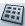
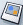
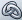
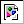
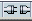
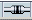

Mozilla Composer で Web ページを作成する
Mozilla Composer を使うと、Web ページを作成したり、作成した Web ページ を Web 上にアップロードすることができます。Composer は、ワード プロセッサと同じように簡単に操作できるため、HTML の知識は必要ありません。
ツールバーのボタンを使ってリストや表、画像、他のページへのリンク、色、フォントスタイルなどを指定できます。Web ページを作成しながらその結果を Web 上で確認できるほか、使用しているブラウザまたは HTML 対応の電子メールプログラムの種類にかかわらず、誰とでもそのドキュメントを簡単に共有できます。
Mozilla Composer を起動するには：
- ［Mozilla］ウインドウの左下にある Composer アイコンをクリックします。
新規ページを開始する
新規ページを作成する
Mozilla Composer は、Web ページを作成および編集するための HTML（Hypertext Markup Language）エディタです。また、WYSIWYG（What You See Is What You Get）エディタでもあるので、ページがどのように表示されるかを確認しながら作成作業を進めることができます。基本的な HTML 機能は、ほとんどツールバーやメニューコマンドからアクセスできるため、HTML に関する知識は必要ありません。
Composer を使って HTML ソースを編集することもできます。 HTML ソースコードを表示または編集するには、［表示］メニューから［HTML ソース］を選択するか、または［Composer］ウインドウの一番下にある編集モード ツールバーの［HTML ソース］タブをクリックします
Web ページを作成するには、以下のいずれかの方法を使用します。いったんページを開いた後は、ワードプロセッサと同じようにテキストを追加したり編集したりできます。
Navigator ブラウザから新しいページを作成するには：
- ［ファイル］メニューの［新規］から［Composer ページ］を選択します。［Composer］ウインドウが開き、空白のページが表示されます。
Navigator を使って表示中のページを編集するには：
- ページを表示している［Navigator］ウインドウで、［ファイル］メニューから［ページを編集］を選択します。［Composer］ウインドウが開き、そのページが表示されます。
Composer で新しいページを作成するには：
- Composer のツールバーにある［新規］をクリックします。
ローカルドライブに保存されている HTMLファイルを開くには：
- ［ウインドウ］メニューから［Composer］を選択します。［Composer］ウインドウが表示されます。
- ［ファイル］メニューから［ファイルを開く］を選択します。［HTML ファイルを開く］ダイアログボックスが表示されます。
- 編集するファイルをローカル ドライブから探し出します。
- ［開く］をクリックすると、指定したファイルが［Composer］ウインドウ内に開きます。
Web ページを作成するには：
- ［ウインドウ］メニューから［Navigator］を選択します。
- ロケーションバーにページの URL を入力（例： http://home.netscape.com/ja）し、Enter キー（Macintosh の場合は Return キー）を押してその Web ページへ移動します。
- ［ファイル］メニューから［ページを編集］を選択します。
ヒント：最後に使ったファイルを［Composer］ウインドウ内にすばやく開くには、［ファイル］メニューから［最近開いたページ］を選択し、リストから目的のファイルを選択します。
[ このセクションの最初に戻る ]
新規に作成したページを保存、ブラウズする
Composer のドキュメントは、HTML 形式またはテキストのみの形式に保存できます。HTML 形式でドキュメントを保存すると、テキストのスタイル（太字や斜体など）、テーブル、リンク、画像などのドキュメントの書式が維持されます。テキストのみの形式で保存すると、HTML タグはすべて削除されますが、ドキュメントのテキストは維持されます。
HTML 形式でドキュメントを保存するには：
- ［ファイル］メニューから［保存］をクリックするか、構成ツールバーの［保存］ボタンをクリックします。
まだページにタイトルを付けていない場合は、タイトルを付けるように指示されます。ブラウザでページを表示すると、ブラウザ ウインドウのタイトルバーにページのタイトルが表示されます。ページにブックマークを付けた場合は、そのドキュメントのページタイトルがブックマークリストにも表示されます。
次に、ファイル名を入力し、ファイルの保存場所を指定するように指示されます。その際、必ずファイル名に拡張子 .html を残すようにしてください。
既存の HTML ファイルのファイル名や保存場所を変更するには：
- ［別名で保存］を選択し、別のファイル名または保存場所を選択します。
Composer でページを保存すると、ページに含まれるすべてのコンポーネント（HTML、画像、そのほか音声ファイルやスタイルシートなどのファイル）がハードドライブ上に保存されます。ページの HTML 部分のみを保存したい場合は、Composer のページ保存設定を変更する必要があります。ページの保存方法に関する Composer 設定の変更について詳しくは、「Composer の設定 − Composer」を参照してください。
画像の場所が絶対パス（http:// で始まるもの）で表されている場合は、インターネットに接続している間、Composer と Navigator のドキュメントに画像がそのまま表示されます。ただし、画像の保存場所がページの保存場所に対して相対的に指定されている場合（file:/// で始まるもの）は、そのローカル版のドキュメントに画像は表示されません。
テキストのみの形式でドキュメントを保存するには：
- ［ファイル］メニューから［テキストとして保存］を選択します。
- ファイル名を入力し、ファイルの保存場所を指定します。
注記： テキストのみの形式で保存されたドキュメントには、画像が表示されません。
ヒント：作業中のドキュメントを最後に保存した状態に戻すには、［ファイル］メニューから［復帰］を選択します。この際、最後に保存した後に加えた変更は失われるので注意してください。
リンクをテストするためにページをブラウザウインドウに表示するには、以下の手順で操作します。：
- ［ファイル］メニューから［ページをブラウズ］を選択するか、構成ツールバーの［ブラウズ］をクリックします。ドキュメントをまだ保存していない場合には、ページタイトル、ファイル名、および保存場所を入力するように指示されます。［Composer］ウインドウは、［Navigator］ウインドウのバックグラウンドで開いたままになります。
[ このセクションの最初に戻る ]
Web ページの書式を設定する
段落、見出し、リストの書式を設定する
段落に書式を適用するには、まず［Composer］ウインドウを開きます。：
- 書式を適用する開始点をクリックして挿入ポイントを置くか、または書式を適用するテキストを選択します。
- 書式ツールバーのドロップダウンリストから段落の書式を選択します。：
-
テキストの書式を見出しとして設定するには：
- 書式設定するテキスト行をクリックして、挿入ポインタを置きます。
- 書式ツールバーのドロップダウンメニューを使って、見出しのレベルを 1（最大）から 6（最小）の間で選択します。大見出しには「見出し 1」、次のレベルには「見出し 2」のように選択します。
リスト書式を設定するには：
- 書式設定するテキスト行をクリックして、挿入ポインタを置きます。
- ［書式］メニューから［リスト］を選択します。
- 以下のリストスタイルの中から選択します。：
-
- 順不同：各リスト項目に黒丸が付きます。
- 番号付き：各項目に番号が付きます。
- 用語および定義：この 2 つのスタイルはいっしょに動作し、用語集のような形式で表示されます。定義する単語には「用語」タグ、その定義には「定義」タグを使用します。用語テキストはインデントなしで左端に揃えられ、定義テキストはインデントされて表示されます。
ヒント： テキストブロックにリストスタイルをすばやく適用するには、書式ツールバーの［順リスト］ボタン または［順不同リスト］ボタン を使用します。
ラベルまたは番号のスタイルを変更するには：
- 変更するリスト項目のテキストをクリックして挿入ポインタを置くか、リスト全体に新しいスタイルを適用する場合は、複数のリスト項目をクリックします。
- ［書式］メニューから［リスト］を選択し、［リストのプロパティ］をクリックします。
- ドロップダウンメニューからリストのタイプとラベルスタイルを選択します。順リストの場合には、開始番号を指定します。順不同リストの場合には、ラベルのスタイルを指定します。
ヒント： リストのラベルまたは段落番号をダブルクリックしても、［リストのプロパティ］ダイアログボックスが表示されます。
ページ内の段落またはテキストを揃える（例： 中央揃え、左寄せ、右寄せなど）には：
- 揃える段落またはテキスト行に挿入ポインタを置きます。
- ［書式］メニューから［行揃え］を選択し、オプションを選択します。
注記：書式ツールバーを使ってテキストを揃えることもできます。
[ このセクションの最初に戻る ]
リストを操作する
リストを終了して、本文を入力するには：
- リストの最終行の末尾に挿入ポイントを置き、Enter キー（Macintosh では Return キー）を 2 回押すと、リストが終了します。
1 つまたは複数のリスト項目を本文に変更するには：
- リスト項目をクリックして挿入ポインタを置くか、複数のリスト項目を選択します。
- 書式ツールバーの［順リスト］ボタンをクリックするか（順リストの場合）、または［順不同リスト］ボタンをクリックします（順不同リストの場合）。
リスト項目の下のテキストをインデントするには：
- リスト項目の末尾をクリックして、挿入ポインタを置きます。
- Shift+Enter キーを押して、ぶら下がりインデントにします。
- インデントするテキストを入力します。
- Shift+Enter キーを押してさらにインデントされた段落を作成するか、Return キーを押して次のリスト項目を作成します。
ヒント： リストの項目内をクリックしてから書式ツールバーの［右にずらす］または［左にずらす］ボタンをクリックすると、リスト項目のインデント間隔を増減できます。あるいは、リスト項目内をクリックしてから Tab キーを押して、1 レベルずつインデントを下げることもできます。 1 レベルずつインデントを上げるには Shift+Tab キーを押します。
2 つの隣り合うリストを 1 つにまとめるには：
- 1 つにまとめたい 2 つのリストを選択します。両方のリストのエレメントをすべて選択するようにしてください。2 つのリストの間にあるテキストも １ つのリストにまとめられることに注意してください。
- 書式ツールバーの［順不同リスト］または［順リスト］ボタンをクリックします。すると、選択内容が 1 つのリストにまとめられます。
[ このセクションの最初に戻る ]
テキストの色、スタイル、フォントを変更する
選択したテキストの色、スタイル、フォントを変更するには：
- 書式設定するテキストを選択します。
- ［書式］メニューを開き、以下のいずれかを選択します。：
-
ページの背景色を変更するには：
- ページ内をクリックします。
- 書式ツールバーの背景色ブロックをクリックします。
- ［ブロックの背景色］ダイアログボックスで背景色を選択します。
- ［OK］をクリックします。
ヒント： テキストの色を最後に使用した色にすばやく変更するには、テキストを選択し、Shift キーを押したまま書式ツールバーにある文字列用の色ブロックをクリックします。これは、テキストの各行に同じ色を使用するときに便利です。
背景に画像を使用することもできます。「ページの配色と背景を設定する」を参照してください。
[ このセクションの最初に戻る ]
テキストのスタイルを削除または使用中止する
選択したテキストからすべてのテキストスタイル（太字や斜体など）を削除するには：
- テキストを選択します。
- ［書式］メニューから［テキストのすべてのスタイルを破棄］を選択します。
- 入力を続けます。
すべてのテキストスタイルを削除して、入力を続けるには：
- テキストスタイルの設定を中止する場所に挿入ポインタを置きます。
- ［書式］メニューから［スタイルをここで終える］を選択します。
- 入力を続けます。
[ このセクションの最初に戻る ]
テキストを検索または置換する
作業中のページでテキストを検索するには：
- 検索の開始場所をクリックして挿入ポインタを置きます。
- ［編集］メニューから［検索と置換］を選択します。 ［検索と置換］ダイアログボックスが表示されます。
- ［検索文字］フィールドに、検索する文字列を入力します。検索範囲を狭くするには、以下の中から 1 つまたは複数のオプションを選択します。
- 大文字／小文字を区別する：検索で大文字と小文字を区別するかどうかを指定します。
- 先頭へ戻って再度実行する：このオプションを使うと、ページの最後まで検索したら、もう一度ページの最初または最後（検索方向によって異なる）に戻って検索を行います。
- 逆方向に実行する：挿入ポインタから先頭に向けて検索します。
- 検索を開始するには［次を検索］をクリックします。最初の一致項目が見つかった後に次の一致項目を検索するには、再び［次を検索］をクリックします。
- 検索が終わったら［閉じる］をクリックします。
作業中のページでテキストを検索して置換するには：
- 検索の開始場所をクリックして挿入ポインタを置きます。
- ［編集］メニューから［検索と置換］を選択します。［検索と置換］ダイアログボックスが表示されます。
- 検索する文字列と置換後の文字列を入力します。
- 検索範囲を狭くするには、以下の中から 1 つまたは複数のオプションを選択します。：
- 大文字／小文字を区別する：検索で大文字と小文字を区別するかどうかを指定します。このオプションを選択しない場合は、大文字と小文字を区別することなく、検索文字列に一致する文字列が検索されます。
- 先頭へ戻って再度実行する：ページの最後まで検索した後にページの最初に戻って検索を開始します。
- 逆方向に実行する：ページの最後から最初に向けて検索します。
- ［次を検索］をクリックして次の一致項目を探します。次に一致するテキストが検索されます。
- ［置換］をクリックして、見つかったテキストを置き換えます。見つかったテキストを置き換えてから検索を続行するには、［検索と置換］をクリックします。［すべて置換］をクリックすると、ドキュメントで一致するすべてのテキストが置き換えられます。
- 操作が終わったら［閉じる］をクリックします。
[ このセクションの最初に戻る ]
横線を挿入する
横線は、通常、ドキュメントを分割して表示するために使用します。ページに横線（ルール）を挿入するには、まず［Composer］ウインドウを開きます。：
- 線の挿入場所にポインタを置きます。
- ［挿入］メニューから［横線］を選択します。
横線のプロパティを設定する
横線の高さ、長さ、幅、配置、影はカスタマイズできます。
- 罫線をダブルクリックして、［横線のプロパティ］ダイアログボックスを表示します。
- 以下のプロパティを編集できます。：
- 幅： 幅の値を入力し、［%（ウインドウに対して）］または［ピクセル］を選択します。幅をパーセントで指定した場合は、［Composer］ウインドウまたはブラウザウインドウの幅が変わると、罫線の幅も変わります。
- 高さ：横線の高さ（ピクセル単位）を入力します。
- 立体的： 斜めの影を追加し、罫線に奥行きを与えます。
- 配置： 罫線の配置場所（左、中央、右）を指定します。
- ［デフォルトとして使用］をクリックすると、次に横線を挿入したときに、現在の設定が標準設定として使用されます。
- 横線のプロパティを手作業で編集するには、［上級］をクリックします。詳しくは、「上級プロパティエディタを使用する」のセクションを参照してください。
ヒント：［表示］メニューから［HTML 要素名］を選択すると、黄色いボックス内にすべての HTML 要素が表示されます。 HTML 要素名または要素の内容をすべてを選択するには、黄色いボックスをクリックします。 HTML 要素名または要素の［上級プロパティエディタ］ダイアログボックスを表示するには、該当する黄色いボックスをダブルクリックします。
[ このセクションの最初に戻る ]
特殊な文字や記号を挿入する
アクセント記号、著作権マーク、通貨記号などの特殊文字を挿入するには：
- 特殊な文字または記号を挿入する場所をクリックして挿入ポインタを置きます。
- ［挿入］メニューから［特種文字］を選択します。［文字を挿入］ダイアログボックスが表示されます。
- 文字のカテゴリを選択します。
- ［アクセント大文字］または［アクセント小文字］を選択し、［英文字］ドロップダウンメニューからアクセント記号を適用する文字を選択します(注記：すべての文字にアクセント付きの形式があるわけではありません）。著作権マークや分数などの特殊文字を入力する場合は、［共通シンボル］を選択します。
- ［文字］ドロップダウンメニューから挿入する文字を選択します。
- ［挿入］をクリックします。
後で使用できるように、このダイアログボックスを開いたままでドキュメント（またはメール作成ウインドウ）への入力を続けることができます。
- 特殊文字を入力したら、［閉じる］をクリックします。
[ このセクションの最初に戻る ]
HTML 要素と属性を挿入する
HTML ソースコードの操作方法をよく理解している方であれば、ページにタグ、スタイル属性、および JavaScript を挿入することができます。あまり馴れていない方は、変更しない方がよいでしょう。HTML コードを操作するには、以下のいずれかの方法があります。：
- HTML コードを挿入する場所にポインタを置くか、または編集するテキストを選択し、［挿入］メニューから［HTML］を選択します。［HTML を挿入］ダイアログボックスで、HTML タグとテキストを入力し、［挿入］をクリックします。
- 表、名前付きアンカー、画像、リンク、横線などの要素を選択します。要素をダブルクリックすると、その要素の［プロパティ］ダイアログボックスが表示されます。［上級編集］をクリックすると、［上級プロパティエディタ］ダイアログボックスが表示されます。上級プロパティエディタを使うと、HTML の属性、JavaScript、および CSS をオブジェクトに追加できます。
- ［表示］メニューから［HTML ソース］を選択するか、［Composer］ウインドウの一番下にある編集モードツールバーの［ソース］タブをクリックします（編集モードツールバーが表示されていない場合は、［表示］メニューの［表示／隠す］を選択し、編集モードツールバーにチェックマークが付いているかどうかを確認してください）。
上級プロパティエディタを使用する
表、画像、横線などのオブジェクトに HTMLの属性や JavaScript を加えるには、［上級プロパティエディタ］ダイアログボックスを使用します。
注記：HTML の属性の追加、削除、修正方法およびそれに関連する値がよく分らない場合は、これらの操作をしない方がよいでしょう。
［上級プロパティエディタ］ダイアログボックスを表示するには、以下の手順で操作します。：
- ［表示］メニュー（または編集モードツールバー）から［HTML 要素名］を選択します。
- 修正するオブジェクトをダブルクリックし、［プロパティ］ダイアログボックスを開きます。
- ［上級編集］をクリックすると、そのオブジェクトの［上級プロパティエディタ］ダイアログボックスが表示されます。［上級プロパティエディタ］ダイアログボックスには、以下の 3 つのタブがあり、それぞれのタブに選択したオブジェクトの現在のプロパティが表示されます。
- HTML の属性：追加する HTML 属性を表示または入力できます。
- 行内スタイル：属性を使用して CSS（重なったスタイルシート）プロパティを表示または追加できます。 Composer で CSS スタイルを使用する方法について詳しくは、「Composer の設定 − Composer」を参照してください。
- JavaScript のイベント：追加する JavaScript のイベントを表示または入力できます。
- これらの 3 つのリストでプロパティまたは属性を編集するには、編集する属性を選択します。ダイアログボックスの一番下にある［属性］および［値］フィールドで、属性の名前や値を編集できます。新しい属性を追加するには、ダイアログボックスの一番下にある［属性］フィールドに属性を入力します。［値］フィールドをクリックすると、新しい属性が自動的に追加されます。属性を削除するには、リストから削除する属性を選択し、［属性を削除］をクリックします。
注記：必須の属性は、属性リストでハイライト表示されています。
- ［OK］をクリックして、［上級プロパティエディタ］ダイアログボックスの変更を適用します。
- もう一度［OK］をクリックして、［プロパティ］ダイアログボックスを閉じます。
属性テキストは、自動的に引用符で囲まれます。
[ このセクションの最初に戻る ]
HTML を確認する
ドキュメントを Web サーバに置いてそれを公開する前に、ドキュメントの HTML 形式が Web の標準に適合しているかどうかを確認します。確認済みの HTML を含むドキュメントは、別のブラウザで表示したときに問題が発生する可能性が低くなります。Navigator で Web ページを表示して確認しても、他のブラウザで表示したときに正しく表示されるとは限りません。
Composer には、ドキュメントが W3C （World Wide Web Consortium）の HTML 標準に適合しているかどうかを確認する便利な機能が備わっています。 Composer では、W3C HTML Validation Service を使用してドキュメントの HTML 構文が HTML 4.01 標準に適合しているかどうかをチェックします。このサービスは、エラーがある場合の訂正方法に関する情報も提供します。
注記：この機能を使用するには、インターネットに接続している必要があります。
ドキュメントの HTML 構文を確認するには：
- ［ツール］メニューから［HTML の文法を確認］を選択します。保存していない変更がある場合は、作業を進める前に保存するかどうかを尋ねるメッセージが表示されます。
- W3C HTML Validation Service のページが表示されたら、［参照］をクリックして、HTML を確認したいハードディスク上のファイルを指定します。
- ［Validate this document（このドキュメントを確認）］をクリックします。
[ このセクションの最初に戻る ]
適切な編集モードを選択する
通常、標準設定の編集モードを変更する必要はありません。ただし、ドキュメントの HTML ソースコードを操作する際には、編集モードを変更しなければならない場合があります。
Composer には 4 つの編集モードまたはビューが備わっており、それらをすばやく切り替えることができます。どの編集モードでもドキュメントの作業は続けられますが、表示される HTML タグ（およびタグアイコン）は異なります。
編集モードを選択する前に：
- ［表示］メニューから［表示／隠す］を選択し、編集モードツールバーにチェックマークが付いていることを確認します。
編集モードツールバーには、以下の 4 つのタブがあります。：
- 標準編集モード： オンラインでドキュメントがどのように見えるかを確認しながらを作成作業を進めるには、この編集モードを選択します｡このモードを選択すると、表の枠線や名前付きアンカーのアイコンが表示されますが、他の HTML タグアイコンは表示されません。
- HTML 要素名： このモードを選択すると、すべての HTML タグアイコンが表示されます。
- HTML ソース：書式設定されていない HTML ソースコードとしてドキュメントを表示および編集できます。ドキュメントを保存すると、通常の編集モードに戻ります。
- プレビュー：ブラウザウインドウで表示される通りに、ドキュメントを表示および編集できます。ただし、リンクと JavaScript 機能はアクティブではありません。
注記：JavaScript 機能、フレーム、リンク、および GIF アニメーションファイルは、どの編集モードでもアクティブにはなりません。これらの要素をアクティブな状態で表示するには、構成ツールバーの［ブラウズ］ボタンをクリックして、ブラウザウインドウにページを読み込みます。
[ このセクションの最初に戻る ]
Web ページにテーブルを追加する
テーブルを挿入する
テーブルはテキスト、画像、およびデータを行と列の形式に整理するのに便利です。テーブルを挿入するには、以下の手順で操作します。：
- テーブルを表示する場所に挿入ポインタを置きます。
- 構成ツールバーの［テーブル］ボタン  をクリックします。［テーブルを挿入］ダイアログボックスが表示されます。
- 行と列の数を入力します。
- テーブルの幅を入力し、ウインドウに対するパーセント値またはピクセルを選択します（オプション）。
- 枠線の太さをピクセル単位で入力します。枠線を使用しない場合は、「0」と入力します。
注記：枠線のないテーブルの場合は、赤い点線で枠の位置が示されます。ページをブラウザで表示したとき、この点線は表示されません。
- テーブルの属性や JavaScript を適用するには、［上級編集］をクリックして上級プロパティエディタを表示します。
- ［OK］をクリックして設定を適用し、作成されたテーブルを確認します。
テーブルの別のプロパティを変更するには、「テーブルのプロパティを変更する」を参照してください。
ヒント：テーブル内に別のテーブルを挿入するには、［挿入］メニューから［テーブル］を選択します。
[ このセクションの最初に戻る ]
テーブルのプロパティを変更する
このセクションでは、テーブル全体に適用されたプロパティだけでなく、行、列、セルごとのプロパティを変更する方法について説明します。 ［テーブルのプロパティ］ダイアログボックスを表示するには、以下の手順で操作します。：
- テーブル内で任意の場所をクリックして、テーブルを選択します。
- ツールバーの［テーブル］ボタン をクリックするか、または［テーブル］メニューから［テーブルのプロパティ］を選択します。［テーブルのプロパティ］ダイアログボックスには、［テーブル］と［セル］という 2 つのタブがあります。
- ［テーブル］タブをクリックして、以下のプロパティを編集します。：
- 属性や JavaScript イベントを適用するには、［上級編集］をクリックして上級プロパティエディタを表示します。
- ダイアログボックスを閉じずに変更をプレビューするには［適用］をクリックします。変更内容に問題がなければ［OK］をクリックします。
1 つまたは複数のセルのプロパティを表示、変更、追加するには：
- 行、列、またはセルを選択し、［テーブル］メニューから［テーブルのプロパティ］を選択します。［テーブルのプロパティ］ダイアログボックスが表示されます。
- ［セル］タブをクリックして、以下のプロパティを編集します。：
- 選択範囲：ドロップダウンメニューから［セル］、［行］、または［列］を選択します。行、列、セル間を移動するには、［前へ］または［次へ］をクリックします。
- サイズ：［幅］と［高さ］の値を入力して［％（テーブルに対して）］または［ピクセル］を選択します。
- コンテンツ配置：テキストまたはセル内のデータの縦と横の位置を選択します。
- セルのスタイル：列または行の見出しには、ドロップダウンリストから［ヘッダー］を選択します（セルのテキストが中央揃えになり、太字で表示されます）。それ以外は、［標準］を選択します。
- テキストの折り返し：改行記号を挿入しない限り次の行へテキストを折り返さないようにする場合は、ドロップダウンメニューから［折り返しなし］を選択します。折り返す場合には［折り返し］を選択します。
- 背景色：セルの背景色を選択するか、または透明なままにします。
注記：属性や JavaScript イベントを適用するには、［上級編集］をクリックして上級プロパティエディタを表示します。
- ダイアログボックスを閉じずに変更内容をプレビューするには［適用］をクリックします。変更内容に問題がなければ［OK］をクリックします。
ヒント： 選択した複数のセルやテーブル全体のテキストの色または背景色を変更するには、セルを選択するか、テーブル内の任意の箇所をクリックして、書式ツールバーにある文字列の色アイコンまたは背景色アイコンをクリックします。
ヒント： セルの色を最後に使った色に変更するには、セルを選択し、Shift キーを押したまま背景色ブロックをクリックします。これは、個々のセルに 1 つの色を適用するときに便利です。
[ このセクションの最初に戻る ]
行、列、セルを追加、削除する
Composer では、1 つ以上のセル、行、または列をすばやくテーブルに追加したり、削除することができます。さらに、編集中にテーブルのレイアウト（元の四角形の構造）を維持するためのオプションも指定できます。
セル、行、列をテーブルに追加するには：
- セルを追加するテーブルの内部をクリックします。
- ［テーブル］メニューから［挿入］を選択します。
- セルのグループ分けの 1 つを選択します。テーブルのセル内に新しいテーブルを挿入することも可能です。
セル、行、列を削除するには：
- 行、列、セルをクリックして挿入ポインタを置きます。または、一度に複数の行を削除する場合は、いくつかの隣接するセルを選択します。 隣接するセルを選択するには、選択するセル上をマウスでドラッグします。 個別に複数のセルを選択するには、Ctrl キー（Windows および Linux の場合）または Command キー（Macintosh の場合）を押したまま、目的のセルを選択します。
- ［テーブル］メニューから［削除］を選択します。
- 削除する項目を選択します。
セルを右側のセルと結合するには：
- セルの内部をクリックし、［テーブル］メニューから［右のセルに結合］を選択します。
隣接するセルを結合するには：
- 隣接するセルをドラッグして選択します。
- ［テーブル］メニューから［選択したセルを結合］を選択します。
結合したセルを元の 2 つ以上のセルに分割するには：
- 結合したセルの内部をクリックし、［テーブル］メニューから［セルの分割］を選択します。 2 つに分割されたセルのうち、最初のセルに結合セルの内容がすべて入ります。
隣接していないセル、行、列を選択する方法については、「テーブルの要素を選択する」を参照してください。
標準のテーブル編集動作を変更する
標準設定では、複数のセルを削除すると、必要に応じて行の最後にセルが追加され、テーブルの構造が維持されます。この機能により、複数のセルを削除しても、テーブルの長方形のレイアウトまたは構造がそのまま維持されます。そうでないと、セルを削除したときに、テーブルに空白部分ができたり、セルの数が揃わないために外枠が不規則な形になってしまいます。
テーブルに関する標準の編集動作を変更するには、まず［Composer］ウインドウを開きます。：
- ［編集］メニューから［設定］を選択し、［Composer］を選択します。
- ［テーブルの編集］セクションで、以下を設定します。：
- ［セルの挿入または削除中もテーブルのレイアウトを維持する］チェックマークがオンになっていることを確認し、不規則な形のテーブルにならないようにします。
- ［OK］をクリックします。
「Composer の設定 − Composer」も参照してください。
[ このセクションの最初に戻る ]
テーブルの要素を選択する
以下のいずれかの方法を使うと、テーブル、セル、またはセルのグループをすばやく選択できます。
- テーブル内をクリックしてから、［テーブル］メニューの［選択］を選択し、サブメニューから項目を選択します。 たとえば、テーブルを選択するには、テーブル内の任意の箇所をクリックし、［テーブル］メニューから［選択］、［テーブル］の順に選択します。
- または、マウスを使って選択することもできます。：
-
- 隣接した複数のセルを選択するには、1 つのセル内をクリックし、選択するすべてのセル上をドラッグします。行を選択する場合はマウスを横方向に、列を選択するにはマウスを縦方向にドラッグします。
- 隣接していないセルを選択するには、Ctrl キー（Windows および Linux）または Command キー（Macintosh）を押し、1 つのセルの内部をクリックします。そして、Ctrl キー（Windows および Linux）または Command キー（Macintosh）を押したまま、他のセルを選択します。
- 隣接したセルが含まれるように選択範囲を広げるには、1 つのセル内をクリックし、隣接したセル上をドラッグして選択範囲を広げます。
- 複数の隣接した列または行を選択するには、上下にドラッグして最初の列または行を選択し、次に左右にドラッグして隣接した列や行を選択します。行全体を選択するには、Shift キーを押したまま右方向へドラッグします。列全体を選択するには、Shift キーを押したまま上または下方向へドラッグします。
[ このセクションの最初に戻る ]
テーブルを移動、コピー、削除する
テーブルを移動するには：
- テーブル内をクリックします。
- ［テーブル］メニューから［選択］、［テーブル］を順に選択します。
- テーブルをコピーまたは移動するには、［編集］メニューの［切り取り］、［コピー］、［貼り付け］オプションを使います。
- テーブルを削除するには、［テーブル］メニューから［削除］、［テーブル］を順に選択します。
テキストをテーブルに変換する
テキストをテーブルに変換するには：
- テーブルに変更するテキストを選択します。テーブル内では、選択範囲内の段落ごとに行が作成されることを覚えておいてください。
- ［テーブル］メニューから［選択範囲からテーブルを作成］を選択します。 ［テーブルに変換］ダイアログボックスが表示されます。
- 選択範囲を列に分割するために使用する文字を選択するか、または別の文字を指定します。列の区切り文字にスペースを選択する場合は、Composer で複数のスペースを 1 つのスペースとして処理するかどうかを選択します。
- ［区切り文字を削除］チェックマークをオンにして、テキストがテーブルに変換されると区切り文字が削除されるようにします。区切り文字を削除しない場合は、このオプションをオフにしてください。
- ［OK］をクリックします。
注記： 選択した文字列をテーブルに変換すると、書式設定は削除されます。
[ このセクションの最初に戻る ]
Web ページに画像を追加する
作成したページに画像を挿入する
作成した Web ページに GIF、JPEG、BMP、および PNG（Portable Network Graphics）形式の画像を挿入できます。また、それらの画像を使ってリンクを作成することもできます。画像を挿入すると、ページ内に画像への参照が保存されます。
注記： 作成したページをインターネット上で公開する場合は、BMP 画像を使用しないことをお勧めします。
ヒント： 画像をページに挿入する前に、まずページを保存またはアップロードすることをお勧めします。これにより、画像を挿入する際、Composer が自動的に相対参照を使用するようになります。
画像を挿入するには：
- 画像を表示する場所をクリックして挿入ポインタを置きます。
- ツールバーの［画像］ボタン  をクリックするか、または［挿入］メニューから［画像］を選択します。［画像のプロパティ］ダイアログボックスが表示されます。
- 画像ファイルの場所と名前を入力するか、［ファイルを選択］をクリックしてハードドライブまたはネットワーク上の画像ファイルを指定します。
- テキスト専用ブラウザ（およびその他のブラウザ）で、画像を読み込み中または画像の読み込みが使用できない場合に表示する代替テキストとして、画像の簡単な説明を入力します。
または、代替テキストを使用しないように選択することもできます。
- 必要に応じて、他のタブをクリックし、［画像のプロパティ］ダイアログボックスの設定（たとえば配置など）を調整します。
ヒント：画像をすばやく挿入するには、画像をページまでドラッグします。
ヒント： 1 つの段落内のすべての画像の後に改行記号を挿入するには、［挿入］メニューから［画像の下で区切る］を選択します。
[ このセクションの最初に戻る ]
画像のプロパティを編集する
ページに画像を挿入した後、そのプロパティ（高さ、幅、余白、文字列の配置など）を編集してページ内でのレイアウトをカスタマイズできます。［画像のプロパティ］ダイアログボックスを表示するには、以下の手順で操作します。
選択した画像のプロパティを編集するには：
- 画像をダブルクリックするか、画像を選択してからツールバーの［画像］ボタン をクリックして、［画像のプロパティ］ダイアログボックスを表示します。
- ［場所］タブをクリックして、以下のプロパティを編集します。
- 画像の場所：画像ファイルのファイル名と場所を入力します。ハードドライブまたはネットワーク上の画像ファイルを検索するには、［ファイルを選択］をクリックします。
- URL をページの場所に相対的にする：このオプションをオンにすると、Composer によって URL がページの場所に対して相対的に変換されます。このオプションは、ページを他の人に公開するため Web サーバでページをアップロードする場合に便利です。相対的な URL を使用すると、リンクされているファイルはすべて、ハードディスクや Web サーバでの場所に関係なく、1 つの相対的な場所に保管されます。
このチェックボックスをオフにすると、URL は完全（絶対的）な URL に変換されます。通常、絶対 URL は、ローカルのハードディスク上ではなく、他の Web サーバ上に保存されている画像にリンクしている場合に使用します。
Web ページを一度も保存またはアップロードしていない場合は、まずそのページを保存しないと、このチェックボックスは使用できません（メッセージ作成ウインドウから［画像のプロパティ］ダイアログボックスを開いた場合、このチェックボックスは使用できません）。
- 代替テキスト：元の画像の代わりに表示するテキスト（例： 題名や画像の簡単な説明など）を入力します。代替テキストは、テキスト専用のブラウザを使用しているユーザ、または画像の読み込みをオフにしているユーザにとって便利な機能です。
- 代替テキストを使用しない： 画像に代替テキストが不要な場合や、代替テキストを使用したくない場合はこのオプションを選択します。
- ［サイズ］タブをクリックして、以下のプロパティを編集します。：
- 実際のサイズ： 画像のサイズに加えた変更をすべて破棄して、元のサイズに戻します。
- ユーザ定義のサイズ： このオプションを選択すると、画像の高さや幅をピクセル単位またはパーセント値で指定できます。この設定は、ページ内に挿入された画像だけに適用されるもので、元の画像ファイルには影響を与えません。
- 制限： 画像サイズを変更する場合は、このオプションを選択して縦横比を維持することをお勧めします。これにより、画像が歪むことを防止できます。このオプションを選択した場合は、高さまたは幅のいずれかを変更するだけでよく、両方を変える必要はありません。
- ［表示］タブをクリックして、以下のプロパティを編集します。：
- 余白：画像の周囲（画像に隣接するテキストとの間）の余白の量を指定します。画像の周囲に黒い実線の枠を表示し、その幅をピクセル単位で指定することもできます。枠線を使用しない場合は「0」と指定します。
- 文字列を画像に合わせて配置：画像を文字列の近くに配置する場合は、配置アイコンを選択して、画像に対して文字列をどのように配置するかを指定します。
- 画像マップ：［削除］をクリックすると、画像マップの設定が削除されます。
- ［リンク］タブをクリックして、以下のプロパティを編集します。：
- Web ページの場所を入力： この画像にリンクを定義するには、リモートまたはローカルページの URL を入力するか、またはドロップダウンリストから名前付きアンカーまたは見出しを選択します。ハードドライブまたはネットワーク上の画像ファイルを検索するには、［ファイルを選択］をクリックします。
- URL をページの場所に相対的にする：このオプションをオンにすると、Composer によって URL がページの場所に対して相対的に変換されます。このオプションは、ページを他の人に公開するため Web サーバでページをアップロードする場合に便利です。相対的な URL を使用すると、リンクされているファイルはすべて、ハードディスクや Web サーバでの場所に関係なく、1 つの相対的な場所に保管されます。
このチェックボックスをオフにすると、URL は完全（絶対的）な URL に変換されます。通常、絶対 URL は、ローカルのハードディスク上ではなく、他の Web サーバ上に保存されている画像にリンクしている場合に使用します。
保存していない変更がある場合は、ページを保存しないと、このチェックボックスは使用できません（メッセージ作成ウインドウから［画像のプロパティ］ダイアログボックスを開いた場合、このチェックボックスは使用できません）。
- リンク付き画像の周囲に枠を表示： このオプションを選択すると、画像の周囲にリンクを示す色の枠が表示されます。
- 属性や JavaScript イベントを適用するには、［上級編集］をクリックして上級プロパティエディタを表示します。
- 変更内容を確認したら、［OK］をクリックします。
[ このセクションの最初に戻る ]
ページのプロパティを設定する
ページのプロパティと Meta タグを設定する
［ページのプロパティ］ダイアログボックスを使用して、現在作業中のドキュメントのタイトル、作成者、説明などのプロパティを入力できます。これらの情報は、ページを Web サイトで使用する場合に役立ちます。なぜなら、検索エンジンはこの種の情報を使用してページを索引に載せるからです。ブラウザウインドウにページ情報を表示するには、［表示］メニューから［ページ情報］を選択します。
- ［書式］メニューから［ページのタイトルとプロパティ］を選択します。
- 以下のプロパティを編集できます。：
-
- タイトル：ウインドウタイトルとしてブラウザに表示するテキストを入力します。ほとんどの Web 検索ツールはこのタイトルで Web ページを検索するため、ページの内容を簡潔に表すタイトルを入力してください。
- 作成者：ドキュメントを作成した人の名前を入力します。この情報は、ユーザが Web 検索ツールで名前を使ってドキュメントを検索する際に役立ちます。
ヒント：Composer の設定に作成者名を入力しておくと、新しいページを作成するたびに入力する必要がありません。
- 説明：ドキュメントのコンテンツに関する簡単な説明を入力します。
[ このセクションの最初に戻る ]
ページの配色と背景を設定する
作業中のページの背景色を変更したり、背景に使う画像を指定することができます。これらの設定により、ブラウザを通じてページ内に表示されるテキストやリンク要素の見た目が変わります。
ページの配色や背景を設定するには、まず［Composer］ウインドウを開きます。：
- ［書式］メニューから［ページの配色と背景］を選択します。
- 以下のプロパティを編集できます。
-
- 閲覧者側の標準色： 閲覧者のブラウザの色設定を使用してテキストおよびリンク要素を表示します。
- カスタム配色を使用：テキストおよびリンク要素の色を指定できます。それぞれの要素ごとに、ドロップダウンリストから色を選択してください。リンクごとにサンプルが右側のウインドウに表示されます。
- 背景画像：ページの背景に画像を使用する場合は、このオプションを選択します。画像ファイルの名前を入力するか、［ファイルを選択］をクリックしてハードドライブまたはネットワーク上の画像ファイルを探します。
注記：背景画像は背景色の選択より優先され、並べて表示されます。
- URL をページの場所に相対的にする：このオプションをオンにすると、Composer によって URL がページの場所に対して相対的に変換されます。このオプションは、ページを他の人に公開するため Web サーバでページをアップロードする場合に便利です。
相対的な URL を使用すると、リンクされているファイルはすべて、ハードディスクや Web サーバでの場所に関係なく、1 つの相対的な場所に保管されます。
このオプションをオフにすると、URL は完全（絶対的）な URL に変換されます。通常、絶対 URL は、ローカルのハードディスク上ではなく、他の Web サーバ上に保存されている画像にリンクしている場合に使用します。
保存していない変更がある場合は、ページを保存しないと、このチェックボックスは使用できません。
注記：属性や JavaScript イベントを適用するには、［上級編集］をクリックして上級プロパティエディタを表示します。
Composer で作成する新規ページごとに、標準のページ背景と配色を設定することもできます。
[ このセクションの最初に戻る ]
Composer でリンクを作成する
同じページ内にリンクを作成する
同じページ内にリンク（例： 1 つのセクションから別のセクションへの移動）を作成するには、アンカーを作成し、そのアンカーへのリンクを作成します。アンカーは、名前付きアンカーとも呼ばれます。
- アンカーを作成する行の先頭をクリックして挿入ポインタを置くか、テキストの一部を選択します。
- ［挿入］メニューから［名前付きアンカー］を選択します。［名前付きアンカーのプロパティ］ダイアログボックスが表示されます。
- ［アンカー名］フィールドにアンカーの名前（30 文字以内）を入力します。スペースを入れると、アンダースコア（ _ ）に変換されます。手順 1 でテキストを選択した場合は、このボックスにすでに名前が入力されています。
- ［OK］をクリックします。 ドキュメント内に、アンカーの位置を示すアンカーアイコンが表示されます。
ユーザがアンカーへ移動できるようにリンクを作成するには：
- アンカーにリンクするテキストまたは画像を選択します。
- ［リンク］ボタンをクリックするか、または［挿入］メニューから［リンク］を選択します。［リンクのプロパティ］ダイアログボックスが表示されます。
- コンピュータ内に保存されている HTML ファイルへのリンクを作成する場合は、［ファイルを選択］をクリックし、そのファイルを指定します。
- 名前付きアンカー（ターゲット）へのリンクを作成する場合は、ページ内で使用可能なアンカーのリストから選択します。
- アンカーのない見出し（たとえば、見出し 1 − 見出し 6）へのリンクを作成するには、ページ内で使用可能な見出しのリストから選択します。
- ［OK］をクリックします。
注記：作成したリンクをテストするには、［ファイル］メニューから［ページをブラウズ］を選択し、リンクをクリックします。
ヒント：最初に名前付きアンカーを作成しなかった場合は、［リンク］ダイアログボックスを使って、ページにすでにある見出しへのリンクを作成できます。
[ このセクションの最初に戻る ]
他のページへのリンクを作成する
作成したページから、お使いのコンピュータ上または LAN 上のローカルページ、あるいはインターネット上のリモートページへのリンクを作成できます。
ヒント： 他のページへのリンクを作成する前にページを保存またはアップロードすることをお勧めします。これにより、リンクを作成する際、Composer が自動的に相対参照を使用するようになります。
別のページへのリンクを作成するには：
- リンクを作成する場所をクリックして挿入ポインタを置くか、リンク先のアンカーを配置するテキストまたは画像を選択します。
- ［リンク］ボタンをクリックします。［リンクのプロパティ］ダイアログボックスが表示されます。
- リンクを定義します。：
- 属性や JavaScript イベントを適用するには、［上級編集］をクリックして上級プロパティエディタを表示します。
- ［OK］をクリックします。
- 作成したリンクをテストするには、［ブラウズ］ボタンをクリックし、リンクをクリックして予想通りの結果になるかどうかを確認します。
ヒント： 別のウインドウでリンクをクリックし、それをドラッグしてページ内にドロップすると、そのリンクをすばやくコピーできます。たとえば、Web ページ、ブックマーク、またはメールウインドウでリンクをクリックし、それを作業中のページ上にドラッグアンドドロップします。 Web ページのリンクを右クリック（Macintosh では Control キーを押したままクリック）してメニューから［リンクの場所をコピー］を選択することもできます。 この場合は、［リンクのプロパティ］ダイアログボックスの［リンクの場所］フィールドにリンクの場所を貼り付けることができます。
[ このセクションの最初に戻る ]
画像をリンクとして使用する
JPEG、GIF、PNG ファイルなどの画像ファイルをリンクとして使うことができます。リンクされた画像をクリックすると、ブラウザウインドウにその画像のリンク先ページが表示されます。
- ページ内の画像を選択します。
- ツールバーの［リンク］ボタン  をクリックするか、または［挿入］メニューから［リンク］を選択します。
- ［リンクのプロパティ］ダイアログボックスを使って、画像をページ内の名前付きアンカーや見出し、または別のローカルページやリモートページにリンクします。
ヒント：画像とリンクの両方をコピーするには、［Navigator］ウインドウから［Composer］ウインドウへリンク付きの画像をドラッグアンドドロップします。
注記： リンクとして使用する画像の周囲に表示される青い枠線を取り除くには、［画像のプロパティ］ダイアログボックスを開き、［リンク］タブをクリックして［リンク付き画像の周囲に枠を表示］チェックボックスをオフにします。
[ このセクションの最初に戻る ]
リンクを削除、またはリンクのテキストを終了する
リンクを削除するには：
- リンク付きのテキスト（通常、青色で下線付き）または画像を選択します。
- ［書式］メニューから［リンクを削除］を選択します。
リンクの後にあるテキストがリンクの一部にならないように、リンクのテキストを終了するには：
- リンクを終端となる場所をクリックして、挿入ポインタを置きます。
- ［書式］メニューから［リンクをここで終える］を選択します。
[ このセクションの最初に戻る ]
Web ページをアップロードする
ページがローカルのハードディスク上にしかない場合は、自分以外の人がそのページをブラウズすることはできません。Composer を使って、作成したWeb ページを Web サーバと呼ばれるリモートコンピュータにアップロードすることができます。
Web サーバにページをアップロードすると、他のユーザがブラウザできるコンピュータにそのページがコピー（アップロード）されます。ほとんどの ISP では、Web ページをアップロードするために Web サーバ上のスペースが用意されています。ページをアップロードできる Web サーバがあるかどうかについては、ご利用の ISP、ヘルプデスク、またはシステム管理者に問い合わせてください。
ドキュメントをアップロードする
ヒント： リンクや画像をページに挿入する前に、まずページを保存またはアップロードすることをお勧めします。これにより、リンクや画像を挿入する際、Composer が自動的に相対参照を使用するようになります。
ドキュメントをアップロードするには：
- アップロードする HTML ドキュメントを開きます。または、新しく Composer ドキュメントを作成します。
- ドキュメントをリモートコンピュータにアップロードする準備ができたら、［アップロード］ボタンをクリックします。
このドキュメントを以前アップロードしたことがある場合は、保存されている前回のアップロード設定を使用してドキュメントがアップロードされます。ドキュメントのアップロード中は、そのステータスを示すダイアログボックスが表示されます。
- このドキュメントをまだアップロードしたことがない場合は、［ページのアップロード］ダイアログボックスに［設定］タブが表示され、ドキュメントのリモートアップロード場所に関する情報を入力します。詳しくは、「ページのアップロード − 設定」を参照してください。情報を入力し終わったら、［アップロード］をクリックします。
- ドキュメントを一度も保存していない場合は、［ページのアップロード］ダイアログボックスの［アップロード］タブが表示されるので、そこにドキュメントのファイル名を入力できます。詳しくは、「ページのアップロード − アップロード」を参照してください。ファイル名を入力したら、［アップロード］をクリックします。
- アップロードしたページをブラウズするには、［ブラウズ］ボタンをクリックします。ページ内のリンクをテストして、抜けている画像がないかどかを確認してください。
- 必要に応じて、ページの編集作業を続行します。リモートページに変更を適用する準備ができたら、［アップロード］ボタンをクリックします。
初めてドキュメントをアップロードしたときには、そのドキュメントがまだ編集段階であることを示すために、ドキュメントの file:/// URL が http:// URL に変更されます。ドキュメントをローカル（お使いのコンピュータのハードディスク）に保存したい場合は［保存］ボタンをクリックします。ハードディスク上に保存するドキュメントのファイル名と保存場所を選択するためのダイアログボックスが表示されます。
[ このセクションの最初に戻る ]
リンクが機能しない、または画像が表示されないなどの問題を避けるためのヒント
- Composer で作成したファイルの名前の拡張子が .html または .htm であることを確認します。また、画像のファイル名の拡張子が .JPG、.GIF、または .PNG であることを確認します。ファイル名にはスペースやその他の特殊記号を使用しないでください。短いファイル名を使用し、大文字または小文字の英字および数字だけを使用するようにしてください。
- Web サーバ上のドキュメントをでブラウズしたときにリンクが壊れている場合は、アップロードの際に画像を入れ忘れたことが考えられます。［ファイル］メニューから［名前を付けてアップロード］を選択して［ページのアップロード］ダイアログボックスを表示します。 ［アップロード］タブで、［画像と他のファイルを含める］チェックボックスがオンになっていることを確認し、［アップロード］をクリックします。
トラブルシュートのヒントについて詳しくは、「アップロードに関して頻繁に発生する問題を解決する」を参照してください。
[ このセクションの最初に戻る ]
アップロードしたドキュメントを更新する
アップロードしたドキュメントを更新するには：
- ［Composer］ウインドウで、［ファイル］メニューから［最近使用したページ］を選択し、リストからドキュメントを選択します。
あるいは、更新するドキュメントの HTTP アドレス（ドキュメントの Web アドレス）を Navigator ブラウザの［ロケーション］フィールドに入力して、ドキュメントの場所まで移動します。
- ［ファイル］メニューから［ページを作成］を選択します。
- 必要に応じてドキュメントを編集します。
- リモートページに変更を適用する準備ができたら、Composer のツールバーで［アップロード］ボタンをクリックします。
ヒント： Web サーバにアップロードされているページまたは画像を削除するには、FTP（ファイル転送プロトコル）プログラムを使用する必要があります。また、Web サーバ上でサブディレクトリを作成したり、あるいはファイル名を変更する場合も FTP プログラムを使用します。どの FTP プログラムを使用したらよいかについては、サービスプロバイダに問い合わせてください。 FTP プログラムに関する情報は、通常、サービスプロバイダの Web サイトにあるヘルプまたはサポートセクションに記載されています。また、FTP プログラムは、ZDNet Downloads などのシェアウェアサイトからも入手できます。
[ このセクションの最初に戻る ]
ファイル名やアップロード場所を変更する
ドキュメントのファイル名やアップロード場所を変更するには：
- ［Composer］ウインドウで、［ファイル］メニューから［最近使用したページ］を選択し、リストからドキュメントを選択します。
あるいは、更新するドキュメントの HTTP アドレス（ドキュメントの Web アドレス）を Navigator ブラウザの［ロケーション］フィールドに入力して、ドキュメントの場所まで移動します。
- ［ファイル］メニューから［ページを作成］を選択します。
- 必要に応じてドキュメントを編集します。
- Composer の［ファイル］メニューから［名前を付けてアップロード］を選択します。［ページのアップロード］ダイアログボックスに［アップロード］タブが表示されます。
- 必要に応じて、ページタイトルを入力します。
- 必要に応じて、そのページの別のファイル名を入力します。
- ［サイト名］リストからアップロード場所を選択します。新しいアップロード場所を設定するには、［新しいサイト］をクリックします。詳しくは、「ページのアップロード − 設定」を参照してください。
- ［アップロード］をクリックして、ドキュメントを新しい場所に保存します。
[ このセクションの最初に戻る ]
新しいアップロードサイトを作成する
複数のリモートサイトにドキュメントをアップロードする場合は、アップロードするたびに情報を入力し直さなくてもよいように、各リモートサイトに関するアップロード情報を Composer に保存することができます。
新しくアップロードサイトを作成するには、まず［Composer］ウインドウを開きます。：
- ［編集］メニューから［アップロードサイトの設定］を選択します。 ［アップロードの設定］ダイアログボックスが表示されます。
- ［新しいサイト］をクリックします。
- ［サイト名］に、このアップロードサイトに対する呼び名を入力します。
たとえば、新しいサイトに「隕石(Meteor)」プロジェクトに関するドキュメントをアップロードするのであれば、サイトに「隕石(Meteor)」という名前を付けることができます。サイト名は、各サイトにアップロードするドキュメントの種類を覚えておくために便宜上使用する名前です。
- ［アップロードアドレス］には、ISP やシステム管理者、または Web ホストサービスから提供される完全な URL を入力します。 この URL は必ず「ftp://」または「http://」で始めます。
アップロードアドレスは、ドキュメントをアップロード（アップロード）する場所を指定するものです。何を入力してよいか分らない場合は、ISP またはシステム管理者に問い合わせてください。
- ［ホームページの HTTP アドレス］には、このサイトのページを表示するために Navigator ブラウザに入力する完全な URL を入力します。ファイル名やサブディレクトリ名は、この URL に含めないでください。
この URL は必ず「http://」で始めます。場合によっては、この URL がアップロードアドレスと同じになることがあります。何を入力してよいか分らない場合は、ISP またはシステム管理者に問い合わせてください。または空白のままにしておきます。
- ［ユーザ名］には、ご利用の ISP や Web ホストサービスへログインする際に使用するユーザ名を入力します。
- ［パスワード］には、ユーザ名に対応するパスワードを入力します。
- このサイトにページをアップロードするたびにパスワードを入力しなくてもよいように、パスワードマネージャを使ってパスワードを保存するには、［パスワードを保存］チェックボックスをオンにします。
- ［OK］をクリックします。
[ このセクションの最初に戻る ]
標準のアップロードサイトを選択する
複数のアップロードサイトが設定してあっても、ほとんどのアップロードに際して 1 つのサイトしか使用しない場合には、最も頻繁に使用するサイトを標準のアップロードサイトとして指定できます。 標準のアップロードサイトを設定すると、別のサイトを特に指定しない限り、すべてのドキュメントのアップロードにそのサイト設定が使用されます。
Composer の［ファイル］メニューから［名前を付けてアップロード］を選択すれば、設定したサイトの数に関係なく、別のサイトにドキュメントをアップロードできます。詳しくは、「ファイル名やアップロード場所を変更する」を参照してください。
標準のアップロードサイトを選択するには、まず［Composer］ウインドウを開きます。：
- ［編集］メニューから［アップロードサイトの設定］を選択します。［アップロードの設定］ダイアログボックスが表示されます。
- リストからアップロードサイトを選択します。
アップロードサイトが 1 つしか設定されていない場合は、そのサイトが標準のサイトとして使用されます。
- ［標準として設定］をクリックします。
- 変更内容を確認したら、［OK］をクリックします。
[ このセクションの最初に戻る ]
アップロードサイトを削除する
アップロードサイトを削除すると、そのサイトの設定情報が Composer から削除されます。削除した後でまたそのサイトにドキュメントをアップロードする場合は、再びサイト設定を入力する必要があります。
アップロードサイトの設定を削除するには、まず［Composer］ウインドウを開きます。：
- ［編集］メニューから［アップロードサイトの設定］を選択します。［アップロードの設定］ダイアログボックスが表示されます。
- リストからアップロードサイトを選択します。
- ［サイトを削除］をクリックします。
サイトの設定情報が Composer から削除されるだけで、リモートサイトそのものにはまったく影響ありません。
- 変更内容を確認したら、［OK］をクリックします。
[ このセクションの最初に戻る ]
アップロードに関して頻繁に発生する問題を解決する
ファイルをアップロードできない場合は、［アップロードステータス］ダイアログボックスにエラーメッセージが表示され、問題の理由とその解決に役立つ情報が表示されます。アップロードに関する問題を解決するための情報を見るには、［アップロードステータス］ダイアログボックスの［トラブルシューティング］ボタンをクリックします。
それでもファイルをアップロードできない場合は、Composer の［ファイル］メニューから［保存］をクリックしてファイルをハードディスクに保存します。そして、そのファイルを開いてもう一度アップロードしてみてください。後でファイルをすばやく開くには、Composer の［ファイル］メニューから［最近使用したページ］を選択します。
アップロード設定を確認する
アップロード設定を確認するには：
- ［アップロードステータス］ダイアログボックスが開いている場合は、それを閉じます。
- ［編集］メニューから［アップロードサイトの設定］を選択します。
- ［アップロードの設定］ダイアログボックスで、アップロードしようとしているサイトの設定が正しいかどうかを確認します。不確かな場合は、ご利用の ISP または Web ホストサービスに問い合わせてください。
-
ファイル名をチェックする
アップロードできなかったファイルのファイル名を調べてみてください。ファイル名が以下の条件を満たしているかどうかを確認します。：
アップロードエラーを解決する
ファイルをアップロードできなかった場合は、［アップロード］ダイアログボックスの［アップロードステータス］欄に表示されるメッセージを参照してください。これらのエラーメッセージは、問題の原因と対処方法を判断するのに役立ちます。
エラーメッセージ：
| ＜ファイル名＞ が見つかりませんでした。
または
合計Y 個のうち X 個をアップロードできませんでした。 |
エラーの説明： 画像ファイルまたは CSS ファイルが見つからなかったため、それらをアップロードできませんでした。 一般に、以下の理由が考えられます。
- 入力したファイルの保存場所が正しくない。
- Web 上のファイルの保存場所にアクセスできない。
- ファイルの保存場所が変更されたか、ファイルが削除または別の場所に移動された。
解決方法：
- アップロードしようとしているページに壊れている画像がないかどうかを確認します。壊れている画像は、ページ内で  アイコンによって示されます。画像のアドレスを訂正するには、壊れた画像イメージをダブルクリックして［画像のプロパティ］ダイアログボックスを表示し、正しいアドレスを入力します。
- 壊れている画像を選択（画像を 1 回クリック）し、キーボード上の Backspace キーまたは Del キーを押してページから削除します。
- 画像が保存されているサーバにアクセスできないために画像を使用できない場合は、後でページをアップロードしてみてください。
- CSS ファイルがない場合は、まず CSS ファイルの正しい保存場所を確認します。 Composer でファイルのアドレスを訂正するには、［HTML ソース］タブをクリックし、HTML ソースコード内のファイルの保存場所を変更します。 HTML タグに不慣れな場合は HTML ソースを編集しないでください。
エラーメッセージ：
| サブディレクトリ ＜ディレクトリ名＞ がこのサイトに存在しないか、またはファイル名 ＜ファイル名＞ が別のサブディレクトリによってすでに使用されています。
または
ファイル名 ＜ファイル名＞ は別のサブディレクトリによってすでに使用されています。 |
エラーの説明： アップロードサイトに存在しないリモートのサブディレクトリ名が指定されています。 Composer は、アップロードサイトに存在するリモートサブディレクトリにしかページをアップロードできません。または、アップロードサイトの既存のサブディレクトリと同じファイル名が指定されています。
たとえば、［ページのアップロード］ダイアログボックスの［アップロード］タブで：
- ［このページのサイトサブディレクトリ］に、アップロードサイトに存在しないサブディレクトリ名を指定したことが考えられます。
- ［画像と他のファイルを含める］チェックボックスをオンにした後、アップロードサイトに存在しないサブディレクトリ名を入力したことが考えられます。
- アップロードしようとしているファイルの 1 つに、アップロードサイトのサブディレクトリと同じ名前が使用されています。
解決方法：
- アップロードサイトでサブディレクトリの作成、名前の変更、削除を行う場合は、別途 FTP プログラムを使用してください。どの FTP プログラムを使用したらよいかについては、サービスプロバイダに問い合わせてください。 FTP プログラムに関する情報は、通常、サービスプロバイダの Web サイトにあるヘルプまたはサポートセクションに記載されています。また、FTP プログラムは、ZDNet Downloads などのシェアウェアサイトからも入手できます。
- サブディレクトリ名の末尾に .html や .htm を使用しないでください。 Composer で作成したファイルのファイル名にだけ .html または .htm の拡張子を付けるようにします。
- サブディレクトリ名の大文字と小文字は区別されます。アップロードサイトに表示されるとおり、正確なサブディレクトリ名を入力してください。
エラーメッセージ：
| サーバを利用できません。 接続を確認し、後でもう一度試してみてください。 |
エラーの説明： このエラーには、多くの原因が考えられます。例として、次の状況が考えられます。
- アップロードサイトの設定が正しくない。
- インターネット接続が切断された。
- インターネット接続に使用するモデムや他の機器が正しく機能していない。
- アップロード先の Web サーバが、技術上の問題または不明な状況によって使用できない状態である。
- ご利用の ISP または Web ホストサービスに技術上の問題が発生している。
解決方法：
- アップロード設定が正しく、それらが正確に入力されているかどうかを確認します。詳しくは、「アップロード設定を確認する」を参照してください。
- Navigator ブラウザに任意の Web ページを表示し、インターネット接続が有効であることを確認します。たとえば、http://home.netscape.com/ja のページが表示されるかどうかを確認します。
- インターネット接続が無効な場合は、すべてのハードウェアや電話回線接続、モデム、ネットワーク接続などが正しく機能しているかどうかを確認します。
- アップロード先の Web サイトのページを Navigator ブラウザで表示してみます。他の Web サイトは表示されてもアップロード先の Web ページが表示されない場合は、ご利用の ISP または Web ホストサービスに技術的な問題が発生している可能性があります。
- 後でもう一度アップロードしてみてください。ご利用の ISP、Web ホストサービス、または Web サーバで一時的な技術上の問題が発生していることが考えられます。
エラーメッセージ：
| この場所にアップロードするための許可がありません。 |
エラーの説明： 使用許可のない場所にページをアップロードしようとしています。ページをアップロードできるのは、ISP または Web ホストサービスによりアクセスを認められたサイトのみです。
解決方法：
- ［アップロードサイトの設定］ダイアログボックスまたは［アップロード］ダイアログボックスの［アップロード］タブで、ユーザ名とパスワードが正しく入力されているかどうかを確認します。
- ご利用の ISP に問い合せて、サイトのどこにページをアップロードできるかを確認します。
- ページをアップロードするために使用する Web ホストサービスを見つけます。 Navigator ブラウザで、「ウェブホスト」を検索します。
- 20 メガバイトまで無料で Web ページをホストできる Mozilla My Webpage http://mywebpage.netscape.com/ を利用できます。
エラーメッセージ：
| 現在オフライン状態です。オンライン状態にするには、任意のウインドウの右下付近にあるアイコンをクリックします。 |
エラーの説明： ページをアップロードしようとしましたが、 Mozilla のインターネット接続がオフライン状態になっています。ページをアップロードするには、インターネット接続を「オンライン」状態（インターネットに接続している状態）にする必要があります。
Mozilla ウインドウの右下に表示されるオンライン／オフラインアイコンで、オフラインになっているかどうかを確認してください。オフラインの場合は  アイコンが表示されます。
解決方法：
- オンライン／オフラインのアイコンをクリックしてオンライン状態にします。オンライン状態の場合は、 アイコンが表示されます。
- Navigator ブラウザで任意の Web ページを表示して、インターネット接続が有効であることを確認します。たとえば、http://home.netscape.com/ja のページが表示されるかどうかを確認します。
エラーメッセージ：
| ＜ファイル名＞ ファイルを保存するのに十分な空きディスクスペースがありません。 |
エラーの説明： リモート Web サーバのハードディスクに空き容量がないか、あるいはご利用の ISP または Web ホストサービスから割り当てられたディスク容量を超えていることが考えられます。
解決方法：
- 別途 FTP プログラムを使ってアップロードサイトから不要なファイルを削除します。どの FTP プログラムを使用したらよいかについては、サービスプロバイダに問い合わせてください。 FTP プログラムに関する情報は、通常、サービスプロバイダの Web サイトにあるヘルプまたはサポートセクションに記載されています。また、FTP プログラムは、ZDNet Downloads などのシェアウェアサイトからも入手できます。
- ご利用の ISP または Web ホストサービスに連絡して、ディスク容量の割り当て量を増やしてもらうか、あるいは、自分のニーズに合わせて別のサービスに切り替えます。
- 会社や学校の Web サーバを使用する場合は、ネットワーク管理者に、ディスク容量の多い別の場所にアップロードできないか、あるいは現在のアップロードサイトに追加のディスク容量を割り当ててもらえないかどうかを問い合わせてください。
エラーメッセージ：
エラーの説明： ファイル名やサブディレクトリ名に使用する文字数がアップロード先の Web サーバコンピュータでサポートされません。
解決方法：
- ファイル名やサブディレクトリ名には 32 文字以上使用しないでください。オペレーティングシステム（OS）によっては、32 文字以上のファイル名やディレクトリ名をサポートしないものがあります。
[ このセクションの最初に戻る ]
アップロード設定
このセクションでは、Composer のアップロード設定について説明します。 Composer の一般設定または新しいページの設定については、「Composer の環境設定」を参照してください。
ページのアップロード − アップロード
［ページのアップロード］ダイアログボックスの［アップロード］タブでは、ドキュメントのアップロード先を指定できます。これらの設定は、現在のドキュメントに適用されます。
［ページのアップロード］ダイアログボックスの［アップロード］タブを表示するには、以下の手順で操作します。：
- ［ファイル］メニューから［名前を付けてアップロード］を選択します。［ページのアップロード］ダイアログボックスが表示されます。
- ［アップロード］タブをクリックします。
ヒント： リモートサブディレクトリを作成したり、あるいはアップロード済みのページや画像を削除するには、FTP（ファイル転送プロトコル）プログラムを使用する必要があります。どの FTP プログラムを使用したらよいかについては、サービスプロバイダに問い合わせてください。 FTP プログラムに関する情報は、通常、サービスプロバイダの Web サイトにあるヘルプまたはサポートセクションに記載されています。また、FTP プログラムは、ZDNet Downloads などのシェアウェアサイトからも入手できます。
[ このセクションの最初に戻る ]
ページのアップロード − 設定
［ページのアップロード］ダイアログボックスの［設定］タブでは、リモートのアップロードサイトへのログイン情報と、リモートサイトでのアップロード設定を指定できます。これらの設定は現在のドキュメントと、この場所にアップロードする他のファイルすべてに適用されます。
［ページのアップロード］ダイアログボックスの［設定］タブを表示するには、以下の手順で操作します。：
- ［ファイル］メニューから［名前を付けてアップロード］を選択します。［ページのアップロード］ダイアログボックスが表示されます。
- ［設定］タブをクリックします。
- サイト名： このアップロードサイトの呼び名を指定します。このアップロードサイトに対する、覚えやすい短い呼び名を入力します。
- アップロードアドレス： ご利用の ISP またはシステム管理者から提供された完全な URL を指定します。この URL は必ず「ftp://」または「http://」で始めます。これは通常「ホスト名」または「ホストサーバ名」と呼ばれるものです。
-
アップロードアドレスは、ドキュメントをアップロード（アップロード）する場所を指定するものです。何を入力してよいか分らない場合は、ISP またはシステム管理者に問い合わせてください。
- ブラウズする HTTP アドレス： アップロードするホームディレクトリの完全なアドレスを指定します。これは、Web サイトのホームページの Web アドレスです。ファイル名やサブディレクトリ名は URL に含めないでください。
-
この URL は「http://」で始まるものでなければなりません。場合によっては、この URL とアップロードアドレスが同じになることもあります。何を入力してよいか分らない場合は、ISP またはシステム管理者に問い合わせてください。または空白のままにしておきます。
- ユーザ名： ご利用の ISP またはネットワークにログオンするために使用するユーザ名を指定します。
- パスワードの変更： ユーザ名に対するパスワードを指定します。
- パスワードを保存： このサイトにページをアップロードするたびにパスワードを入力しなくてもよいように、パスワードマネージャを使ってパスワードを暗号化し、安全に保存するには、この［パスワードを保存］チェックボックスをオンにします。
[ このセクションの最初に戻る ]
アップロードの設定
［アップロードの設定］ダイアログボックスでは、サイト設定を作成、編集、および削除することができます。また、標準のアップロードサイトも設定できます。
［アップロードの設定］ダイアログボックスを表示するには、以下の手順で操作します。：
- ［編集］メニューから［アップロードサイトの設定］を選択します。［アップロードの設定］ダイアログボックスが表示されます。
- 新しいサイト： 新しいアップロードサイトの設定を指定できます。新しいアップロードサイトが使用可能なアップロードサイトのリストに追加されます。
- 標準として設定： 選択したアップロードサイトを標準のアップロードサイトとして設定します。通常、標準のアップロードサイトは、ドキュメントをアップロードする際に最も頻繁に使用するリモートサイトです。作成または編集したドキュメントはすべて、特に［ページのアップロード］ダイアログボックスで別のサイトを選択しない限り、標準のアップロードサイトにアップロードされます。
-
ドキュメントを別のリモートサイトにアップロードするには、［ファイル］メニューから［名前を付けてアップロード］を選択し、別のアップロード先を選択します。
- サイトを削除： 選択したサイトとその設定を Composer から削除します。
- サイト名： このアップロードサイトの名前を指定します。
- アップロードアドレス： ご利用の ISP またはシステム管理者から提供された完全な URL を指定します。この URL は「ftp://」または「http://」から始まるものでなければなりません。
-
アップロードアドレスは、ドキュメントをアップロード（アップロード）する場所を指定するものです。何を入力してよいか分らない場合は、ISP またはシステム管理者に問い合わせてください。
- ブラウズする HTTP アドレス： アップロードするホームディレクトリの HTTP アドレスを指定します。ファイル名やサブディレクトリ名は URL に含めないでください。
-
この URL は「http://」で始まるものでなければなりません。場合によっては、この URL とアップロードアドレスが同じになることもあります。何を入力してよいか分らない場合は、ISP またはシステム管理者に問い合わせてください。または空白のままにしておきます。
- ユーザ名： ご利用の ISP またはネットワークにログオンするために使用するユーザ名を指定します。
- パスワード： ユーザ名に対するパスワードを指定します。
- パスワードを保存： このサイトにページをアップロードするたびにパスワードを入力しなくてもよいように、パスワードマネージャを使ってパスワードを安全に保存するには、この［パスワードを保存］チェックボックスをオンにします。
[ このセクションの最初に戻る ]
Composer の環境設定
このセクションでは、［Composer］設定パネルについて説明します。このパネルを表示するには、以下の手順で操作します。：
- ［編集］メニューから［設定］を選択します。
（Mac OS X の場合）［Mozilla］メニューから［設定］を選択します。
- ［Composer］カテゴリをダブルクリックしてリストを展開表示します。
Composer のアップロード設定について詳しくは、「アップロード設定」を参照してください。
Composer の設定 − Composer
［Composer］設定では、ファイルの保存方法や表の編集方法を設定できます。以下の設定は、作成するすべてのドキュメントに適用されます。：
［Composer］設定を表示するには、以下の手順で操作します。
- ［編集］メニューから［設定］を選択します。
- ［Composer］カテゴリをクリックします。
- 表示するページの最大数：［ファイル］メニューの［最近使用したページ］に表示する最近使ったページの最大数を指定します。
- 元のソースの形式を維持する：HTML ソースコードにおける改行やページの元の書式を維持します。HTML コードを読みやすくするために、空白（余分な行、タブなど）を維持する場合は、このオプションを選択します。この設定は、ブラウザウインドウのページ表示には影響しません。
- HTML ソースを再フォーマット：改行とインデントを挿入して、HTML ソース コードを読みやすくします。この設定は、ブラウザウインドウのページ表示には影響しません。
- ページを保存するときに画像や他の関連ファイルも保存： このチェックボックスをオンにすると、JS （JavaScript）や CSS（重なったスタイルシート：Cascading Style Sheet）、およびその他の関連ファイルが、ドキュメントを最初に保存したときの場所、あるいは保存場所を変更したときの場所に保存されます。このチェックボックスをオフにすると、HTML ファイルだけが保存されます。
-
たとえば、リモートページを編集しているときにこの設定がオンになっている場合は、ページをローカルのハードディスクに保存するとき、そのリモートファイルに関連するファイルもすべてローカルに保存されます。
- ページをアップロードするとき常に［アップロード］ダイアログを表示： このチェックボックスをオンにすると、Composer で［アップロード］ボタンを押したときや、［ファイル］メニューから［アップロード］を選択したときに、必ず［ページのアップロード］ダイアログボックスが表示されます。このチェックボックスをオフにすると、ページをアップロードするために追加情報が必要な場合にのみ［ページのアップロード］ダイアログボックスが表示されます。
- セルの挿入または削除中も表のレイアウトを維持する：必要に応じてセルを追加しても、常に表のレイアウトを維持する（つまり、四角形の形状を保つ）には、このオプションをオンにします。このオプションをオフにしておくと、1 つまたは複数のセルを削除したとき、セルの枠線も削除されます。そのため、表内に空白ができたり、セルが不揃いになって表の形が不規則になる場合があります。
-
- HTML 要素および属性の代わりに CSS スタイルを使用： Composer ドキュメント内で CSS （重なったスタイルシート：Cascading Style Sheet）書式を使用できるようにします。この設定を有効にしておくと、Composer は、要素に対し CSS 本文スタイルを使った HTML 4.01 書式を作成します。
-
この設定をオフにすると、Composer は、HTML 4.01 書式を作成しますが、CSS スタイルは使用しません。
HTML に比べ、CSS 書式を使った HTML はよりポータブルで、ページの維持も容易です。また、様々なブラウザに対してより互換性があります。この設定をオンにして CSS を使用しないドキュメントを編集すると、Composer は編集した要素を CSS スタイルで置き換えます。
CSS スタイルを使用できるようにしておくと、書式ツールバーの［テキストのハイライト色］ボタンを使って選択したテキストのハイライト色を選択できます。また、ページのどの要素に対しても、背景色を選択できます（この設定をオンにしないときには、これらの機能は使用できません）。
[ このセクションの最初に戻る ]
Composer の設定 − 新しいページの設定
［新しいページの設定］では、作成するすべてのドキュメントに適用する色や背景画像を設定できます。
［新しいページの設定］を表示するには、以下の手順で操作します。：
- ［編集］メニューから［設定］を選択します。
- ［Composer］カテゴリをダブルリックし、［新しいページの設定］をクリックします。
ページごとに作成者名を変更するには、［書式］メニューから［ページのタイトルとプロパティ］を選択します。
ページごとに配色と背景画像を変更するには、［書式］メニューから［ページの配色と背景］を選択します。
[ このセクションの最初に戻る ]
2002年 6月20日
Copyright 1994-2002 The Mozilla Organization.